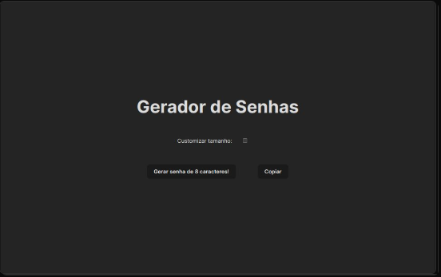

Password Generator
Uma aplicação geradora de senhas é uma ferramenta que cria senhas seguras e aleatórias para proteger contas e dados pessoais. Permite ao usuário definir parâmetros como comprimento, uso de caracteres especiais e combinações de letras e números. Ideal para fortalecer a segurança online, ela evita a reutilização de senhas e oferece uma alternativa prática para gerenciar credenciais. A aplicação pode incluir opções de copiar a senha gerada para a área de transferência e armazená-la de forma segura.